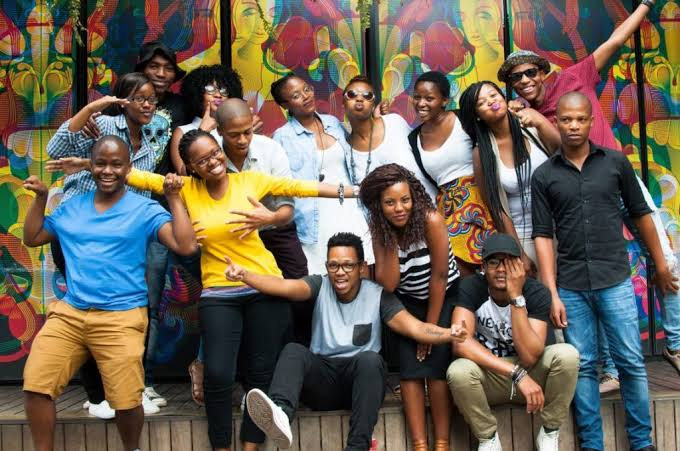

❤Compassion in action
Everyone deserves a second start.
We support young adults transitioning out of children’s homes with guidance, opportunity, and dignity — so they don’t have to face adulthood alone.

The Challenge
Our Response
What We Do
Mentorship
Trusted guidance from people who care and listen.
Life Skills
Financial literacy, communication, and independence.
Education & Work
Support for training, education, and employment pathways.
Community
A sense of belonging beyond institutional care.
Be part of someone’s second start
Whether through mentorship, partnership, or support, your involvement can change a life.
 Get Involved
Get Involved